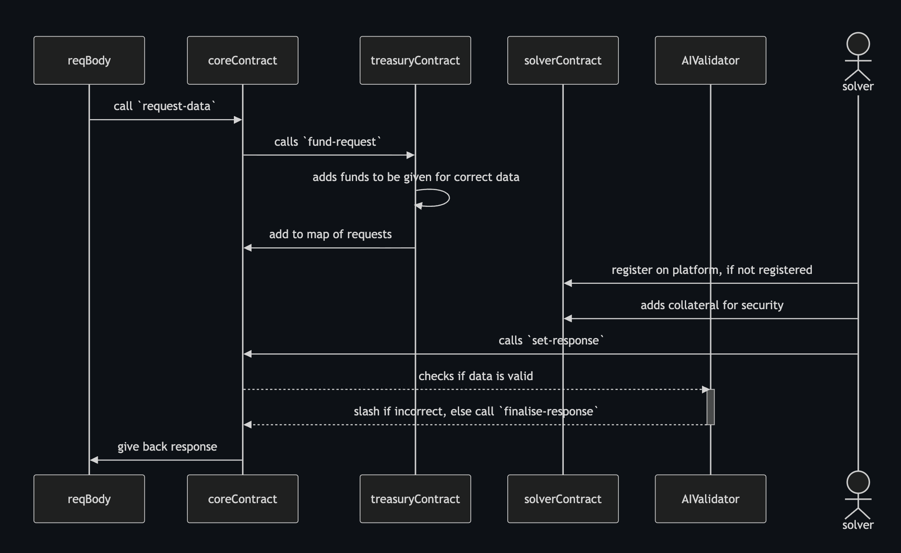

jny0444
Hi, I am Jnyandeep Singh, a CS student passionate about developing applications around Web3.
I have experience writing code in Rust, Go, Solidity, TypeScript and Python. I am focused on building backend/systems design and have a strong interest in distributed systems, blockchain and cryptography.
You can find me on:
Projects
-
Intent-Swaps: Built an intent-based swap system on a local
Arbitrum fork where solvers discover and fulfill signed user
intents. Used EIP-712 typed-data signatures for secure off-chain
message signing and on-chain verification.

GitHub repo -
Rotor: An privacy focused payments protocol built on
Stellar which uses commitment schemes for private transactions.
Used Noir for writing the circuits and UltraHonk proving scheme
for proving in a fast and effective way.
GitHub repo -
BOO: Bitcoin Optimistic Oracle, an Optimistic Oracle system
built on Stellar to provide off-chain data, on-chain. Implemented
an architecture to provide incentive to data providers with a
slash-and-reward mechanism

GitHub repo
You can find more projects on my GitHub.